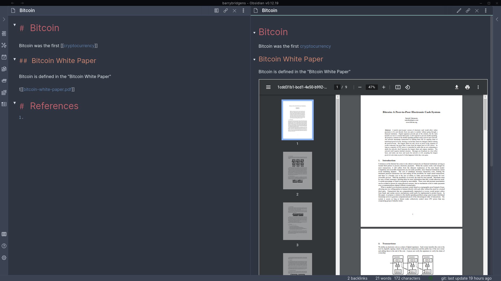
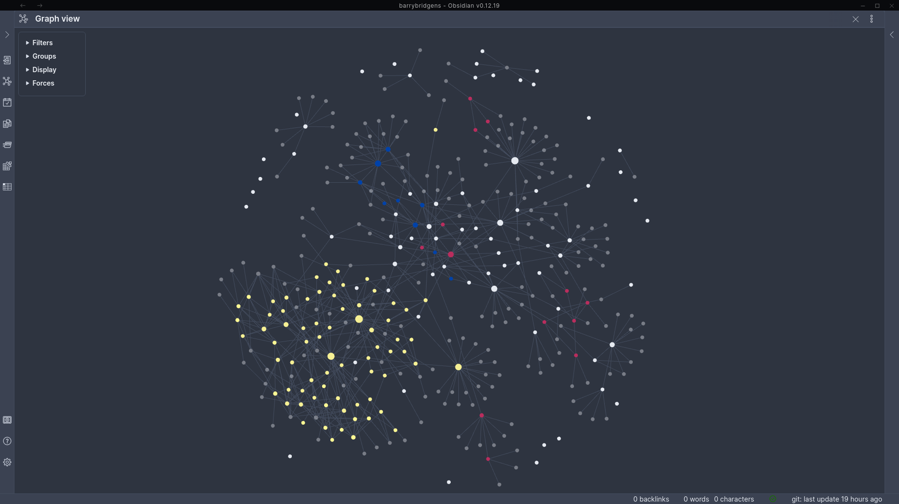

Obsidian
I have started to use Obsidian as my notetaking system.
The basis of the way Obsidian works is the Zettelkasten system. As Wikipedia says, "The zettelkasten (German: "slip box", plural zettelkästen) is a system of note-taking and personal knowledge management used in research and study". A zettelkasten consists of many individual notes with ideas and other short pieces of information that are taken down as they occur or are acquired. The notes may be numbered hierarchically so that new notes may be inserted at the appropriate place, and contain metadata to allow the note-taker to associate notes with each other. For example, notes may contain subject headings or tags that describe key aspects of the note, and they may reference other notes. The numbering, metadata, format and structure of the notes is subject to variation depending on the specific method employed".
Obsidian keeps all notes as Markdown files in a folder on the local machine. The folder can have as much or as little structure (sub-folders) as required. An information "network" is built up by creating links between files in the same way as HTML links between the pages of a web site. A key concept is "Back Links" which show which other files refer to the file being worked on. The Obsidian editor can display the files either as raw Markdown, for editing, or rendered. Section folding works in both views to allow certain sections to be hidden if not needed.
 Obsidian Screenshot 1
Obsidian provides a very good "Graph View" to allow the interconnections between notes to be seen and understood. This feature together with back links can lead to new insights about the relationships between the notes.
 Obsidian Screenshot 2
I am using the paid for Obsidian Sync service to synchronise my data with the mobile applications and I am backing up the data to Github